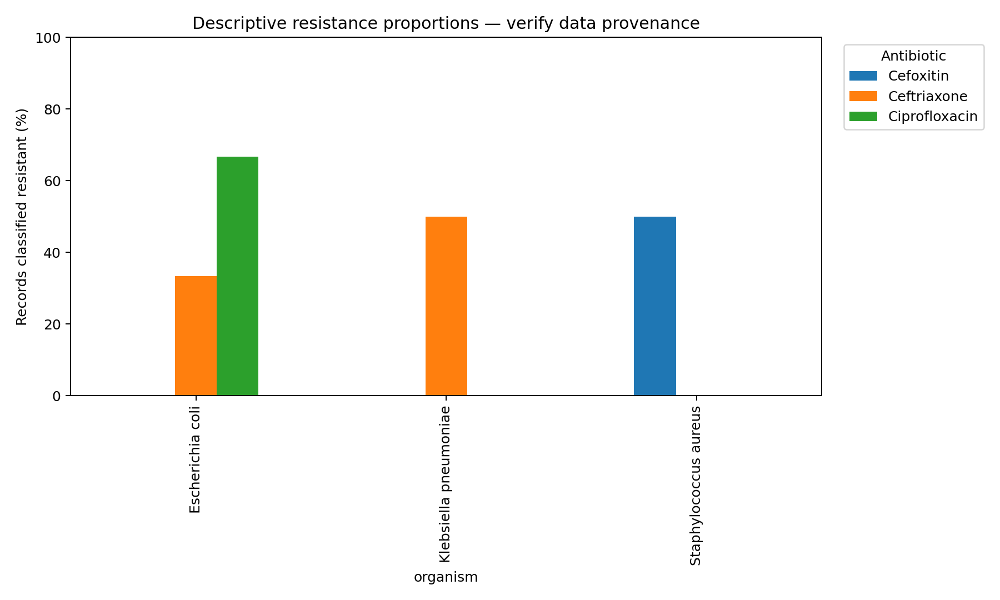

Projet 01 — Résistance aux antimicrobiens
Analyse descriptive de profils de sensibilité dans un jeu de démonstration synthétique.
Objectif
Décrire les catégories sensible, intermédiaire et résistante par organisme et antibiotique, en gardant les dénominateurs visibles.
Méthodes et méthodologie
Contrôle des champs, vérification des doublons, conservation séparée des catégories S/I/R, calcul des effectifs et des proportions, puis représentation graphique.
Résultats
Tableau des proportions · Effectifs par catégorie

Interprétation et limites
Les proportions illustrent le calcul sur de petits effectifs. Elles ne constituent ni une prévalence, ni une comparaison clinique, ni une recommandation thérapeutique.
Données synthétiques publiées pour illustrer la méthode.